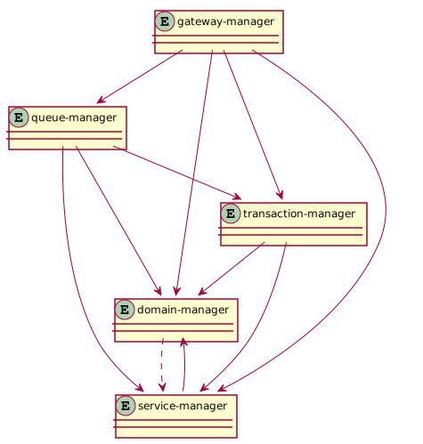

components¶
This section aims to provide an understanding of the fundamental components of which casual consists.
Each component has a manager that has the responsibility of the component
The following diagram illustrates all managers and their relationships.

domain-manager¶
Responsibilities:
Start all other managers
Hold domain configuration datastructure
Start all user
serversandexecutableseventrelay/dispatchProvide pending message service for other managers
Notify subscribers when processes terminate/dies
service-manager¶
Responsibilities:
Service lookup repository
Any running process that has
serviceswill advertise these toservice-manager
transaction-manager¶
Responsibilities:
Start all configured
resource proxiesCoordinate (distributed) transactions
Act as a
resourceto other domains
gateway-manager¶
Responsibilities:
Listen to configured addresses and ports
Start configured
outboundconnectionsStart
inboundconnections, when other domains connect with theiroutbound
gateway-outbound¶
Forward messages to the other end (strict defined protocol)
Act as a
resourcetotransaction-manager(if invocations are in transaction)
queue-manager¶
Responsibilities:
Start all configured
queue-groupsQueue lookup
queue-group¶
Provide configured queues
Guaranteed transactional persistent messages (if configured)
Act as a
resourceto transaction manager